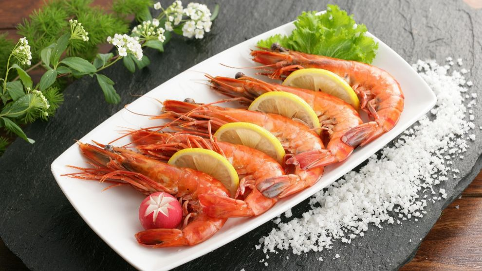

1-Risotto de Setas y Trufa
Ingredientes:
- 200g de arroz arborio
- 1L de caldo de verduras
- 200g de setas (champiñones, portobello, etc.)
- 50g de queso parmesano rallado
- 1 cebolla pequeña
- 2 dientes de ajo
- 1 copa de vino blanco
- Aceite de oliva
- Sal y pimienta
- Aceite de trufa (opcional)
Instrucciones:
- Sofríe la cebolla y el ajo picado en aceite de oliva.
- Añade las setas y cocina hasta que se doren.
- Agrega el arroz y sofríe por unos minutos. Luego, vierte el vino blanco y deja que se evapore. Retira del fuego, añade el queso parmesano y un toque de aceite de trufa.
- Añade el caldo de verduras, poco a poco, removiendo constantemente hasta que el arroz esté cremoso y cocido. Sirve con más queso rallado y un toque de pimienta negra
3-Filete de Res con Salsa de Pimienta Verde
Ingredientes:
- 2 filetes de res (entrecot o solomillo)
- 1 cucharada de pimienta verde en grano
- 200ml de crema de leche
- 1 cucharadita de mostaza de Dijon
- 1 copa de coñac
- Sal y pimienta
Instrucciones:
- Sella los filetes en una sartén a fuego alto hasta que estén dorados por fuera y cocidos a tu gusto por dentro. Retira y reserva.
- En la misma sartén, añade el coñac y deja que se evapore el alcohol. Luego, incorpora la crema de leche, la mostaza y la pimienta verde.
- Cocina la salsa hasta que espese. Añade sal y pimienta al gusto.
- Sirve los filetes con la salsa y acompaña con papas al gratén o verduras al vapor.

2-Magret de Pato con Salsa de Naranja
Ingredientes:
- 2 pechugas de pato (magret)
- 2 naranjas (zumo y ralladura)
- 50g de azúcar moreno
- 1 copa de vino blanco
- 1 cucharadita de maicena
- Sal y pimienta
Instrucciones:
- Marca la piel de las pechugas de pato en forma de rombos y sazona con sal y pimienta.
- Cocina las pechugas en una sartén caliente, primero por el lado de la piel para que suelten grasa y se dore. Luego, dora el otro lado.
- Para la salsa, reduce el zumo de naranja con el azúcar y el vino blanco. Añade la maicena diluida en un poco de agua para espesar.
- Sirve el magret con la salsa de naranja por encima y acompaña con un puré de papas o verduras asadas.
4-Tarta Tatin de Manzanas
Ingredientes:
- 4 manzanas golden
- 150g de azúcar
- 50g de mantequilla
- 1 lámina de masa quebrada
- Canela en polvo (opcional)
Instrucciones:
- Pela y corta las manzanas en cuartos.
- En una sartén apta para horno, carameliza el azúcar con la mantequilla. Añade las manzanas y cocina hasta que estén doradas.
- Cubre las manzanas con la masa quebrada y hornea a 180°C durante 25-30 minutos, hasta que la masa esté dorada.
- Deja enfriar unos minutos, da la vuelta a la tarta sobre un plato y sirve tibia con un toque de canela y helado de vainilla.